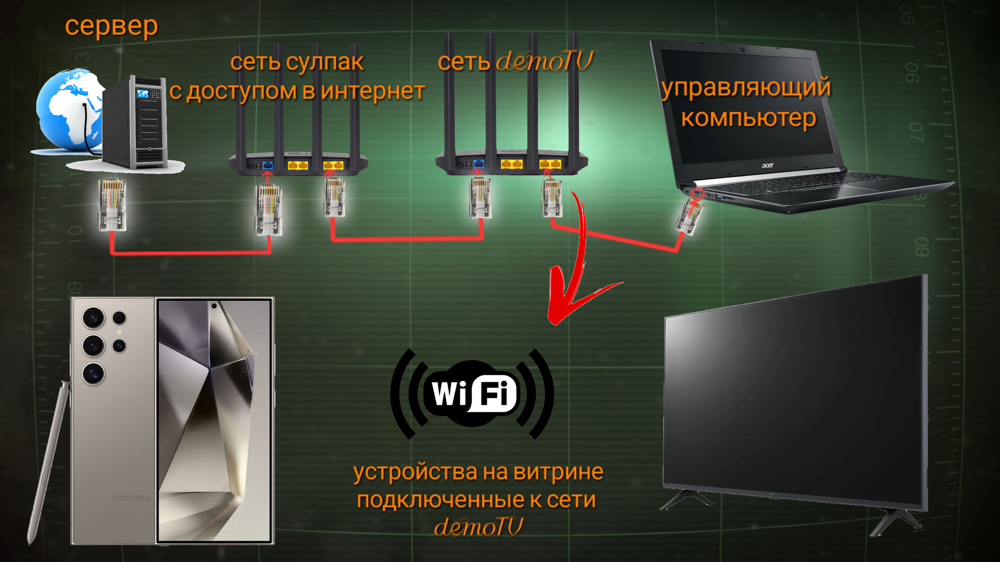

StreamTV – инновационное решение для беспроводной трансляции видео на
любые устройства! Наслаждайтесь быстрой обработкой видео, синхронным воспроизведением на
телевизорах и смартфонах, удобным управлением трансляцией и автоматической оптимизацией
памяти – всё для качественного и стабильного вещания.
Для беспроводной трансляции нужен роутер: Archer C80 (до 60 телевизоров) или
Archer AX73 (свыше 60 телевизоров). Также потребуется компьютер с установленной
программой StreamTV.
Если роутер расположен далеко от клиентов, для сети 2G рекомендуется использовать
репитер для
повышения скорости и стабильности воспроизведения.
Перед установкой временно отключите защиту Windows Defender, чтобы избежать сбоев при
установке и работе программы.
Скачайте программу по ссылке: StreamTV. Запустите установочный
файл и выберите удобную папку. Для корректной работы требуется минимум 1 ГБ свободного
места.
Для трансляции на смартфоны нужен отдельный компьютер с программой StreamTV.
Не объединяйте трансляции для телевизоров и смартфонов в одной сети — это
может вызвать сбои.
Запуск трансляции до завершения обработки видео может привести к ошибкам синхронизации и
проблемам с воспроизведением.
Использование неподходящего роутера или неверная настройка сети могут привести к
перебоям в работе трансляции.
Убедитесь, что на диске достаточно свободного места для установки программы и обработки
видео – менее 1 ГБ может вызвать сбои.
Если вы загружаете видео через FTP, проверьте правильность ввода учетных данных и
настройки подключения – ошибки здесь приведут к неудачной загрузке файлов.
Не пренебрегайте сообщениями и предупреждениями в программе – они помогут быстро выявить
и устранить проблемы.
Настройка роутера
Подключите роутер Archer C80 (или AX73) к корпоративному роутеру Sulpak через
Ethernet-кабель (см. схему).
Затем подключите управляющий компьютер к Archer C80/AX73 через LAN-кабель (см. схему
demoTV).

Для просмотра кликни 2 раза по картинке
Первичная настройка Archer C80/AX73:
Включите роутер и откройте в браузере tplinkwifi.net или
192.168.1.1
(или адрес, указанный в инструкции).
Придумайте логин и пароль для доступа к роутеру.
Перейдите: Расширенная ➔ Сеть ➔
DHCP-сервер.
Установите пул адресов IP: 192.168.1.2 — 192.168.1.249.
Ниже зарезервируйте IP для управляющего ПК:
➔ + Добавить ➔ выбрать устройство ➔ указать IP 192.168.1.200➔
сохранить.
Отключите Smart Connect:
Меню ➔ Беспроводной режим ➔ Настройка ➔ Smart Connect: выкл.
В 5 ГГц и 2.4ГГц укажите имя и пароль сети (например: DemoTV / 11111111) ➔ сохранить.
Сохраните изменения. При необходимости перезагрузите роутер.
Настройка WebOS (LG)
Откройте настройки ТВ, выберите раздел «Сеть» и подключитесь к Wi-Fi с именем
demoTV.
Перейдите в Настройки → Поддержка → Обновление ПО и выполните обновление прошивки ТВ.
Отключите функцию автоотключения ТВ. Настройка обычно находится в разделе «Общие» или
«Поддержка».
Перейдите в Настройки → Поддержка → Управление по IP и включите управление по сети.
Для старых версий WebOS: Настройки → Общие → Устройства → Внешние устройства → Включение
ТВ с мобильного устройства.
На панели управления StreamTV или в разделе инструкций нажмите кнопку
WebOS, чтобы запустить браузер.
Если на тв ранее не использовался StreamTV, при первом запуске может появиться запрос на
разрешение удалённого управления.
Подтвердите его с помощью пульта дистанционного управления.
Настройка Tizen (Samsung)
В меню → Сеть подключитесь к Wi-Fi demoTV.
В меню ТВ: Сеть → Дополнительные настройки → включите управление по IP/Wi-Fi.
Для того что бы запустить браузер на Samsung, необходимо зарегистрировать аккаунт.
Один аккаунт можно использовать на все ТВ
Для регистрации перейдите по ссылке:
https://www.samsung.com/ru/account/
и зарегистрируйтесь, используя почту HiTechnic. Важно: Указывайте простой пароль, например: Demostream!
Запустите браузер — появится запрос на вход. Авторизуйтесь в аккаунте Samsung.
Отметьте галочку «Не выходить на этом устройстве».
В браузере откройте «Настройки» → «Домашняя страница» → выберите «Пользовательская» и
введите:
192.168.1.200:8080. Затем перейдите в «Общие настройки».
В общих настройках включите «Скрывать адресную строку» и отключите опцию
«Продолжить просмотр с других устройств».
Настройка Android TV
Включите ТВ и дождитесь загрузки операционной системы.
Пропустите первичную настройку Android TV.
Откройте настройки ТВ, выберите раздел «Сеть» и подключитесь к Wi-Fi с именем
demoTV.
Для ТВ Haier: откройте Настройки ➔ Об устройстве ➔ нажмите несколько раз на «Номер
сборки», пока не появится режим разработчика.
Далее: Настройки ➔ Для разработчиков ➔ включите Отладку по USB или
Wi-Fi ADB.
Для ТВ ARG (модели 7500 и старше):
На пульте нажмите комбинацию (Menu➔1➔1➔4➔7) ➔ В появившемся меню
разработчика выберите.
Debug ➔ установите параметр ADB enabled: ON.
Модели ниже не требуют настройки. И доступны к управлению через сеть сразу после
подключения к Wi-Fi.
В панели управления StreamTV или в разделе инструкций нажмите кнопку
Android для автоматической установки браузера на ТВ.
Если на тв ранее не использовался StreamTV, при первом запуске может появиться запрос на
разрешение удалённого управления.
Подтвердите его с помощью пульта дистанционного управления.
А так же если брауазер не запустился с первого раза, то попробуйте запустить его ещё
раз. С помощью панели управлениеия StreamTV. Android.
Обновление видео
Скачайте видео с FTP. Для этого нажмите кнопку Скачать видео с FTP.
Введите логин и пароль от учетной записи директора магазина.
Если вы уже авторизовались ранее, этот шаг будет пропущен.
Нажмите Обработать видео — программа подготовит видео, улучшит его качество
и создаст единый поток.
Если вы пропустили шаг скачивания видео с FTP, укажите папку с видеороликами для
трансляции, вручную.
Дождитесь сообщения: ✅ Полная обработка завершена! Видео готово к раздаче через HLS.
Нажмите Запустить стрим HLS, чтобы начать трансляцию на телевизорах.
На панели управления StreamTV нажмите кнопку Android, WebOS
и Tizen, чтобы запустить браузер.
Если трансляция уже была запущена ранее, нажмите Обновить поток HLS.
Проверьте, что трансляция работает на всех подключённых устройствах.
Если на телевизоре ранее не использовался StreamTV, при первом запуске может появиться
запрос на разрешение удалённого управления.
Подтвердите его с помощью пульта дистанционного управления.
Запуск в начале дня
Убедитесь, что ранее вы настроили ТВ и роутер. И компьютер и ТВ подключены к сети
demoTV.
Включите ТВ на витрине и дождитесь загрузки операционной системы.
Откройте приложение StreamTV на управляющем компьютере и нажмите кнопку
запустить стрим HLS.
По очереди нажмите кнопки Android, WebOS, Tizen.
Через несколько секунд на ТВ начнут запускаться браузеры.
Подтверждение этому отобразится в терминале приложения,
а в заголовке вы увидите количество подключённых клиентов.
Если ТВ ранее не запускался удалённо (или ТВ только что установлен), после нажатия
кнопки удалённого включения браузера
на экране ТВ появится запрос на разрешение запуска браузера. Нажмите кнопку "Да" с
помощью пульта дистанционного управления.